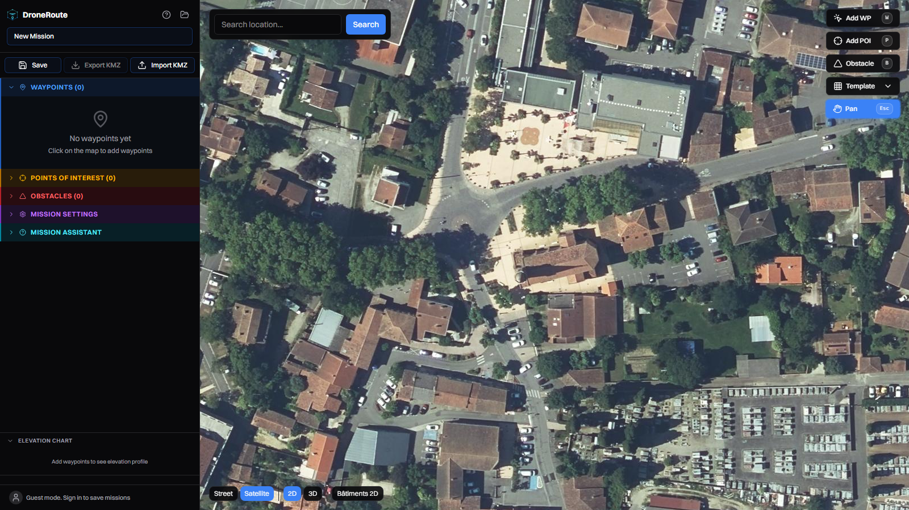
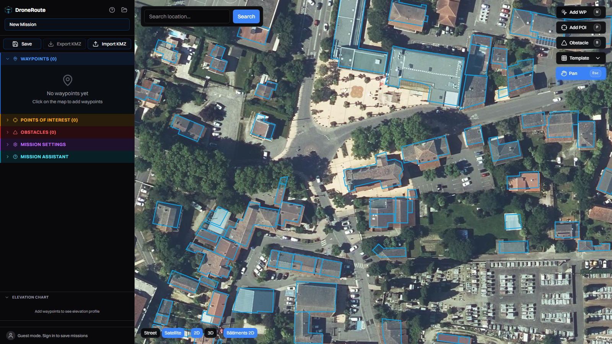
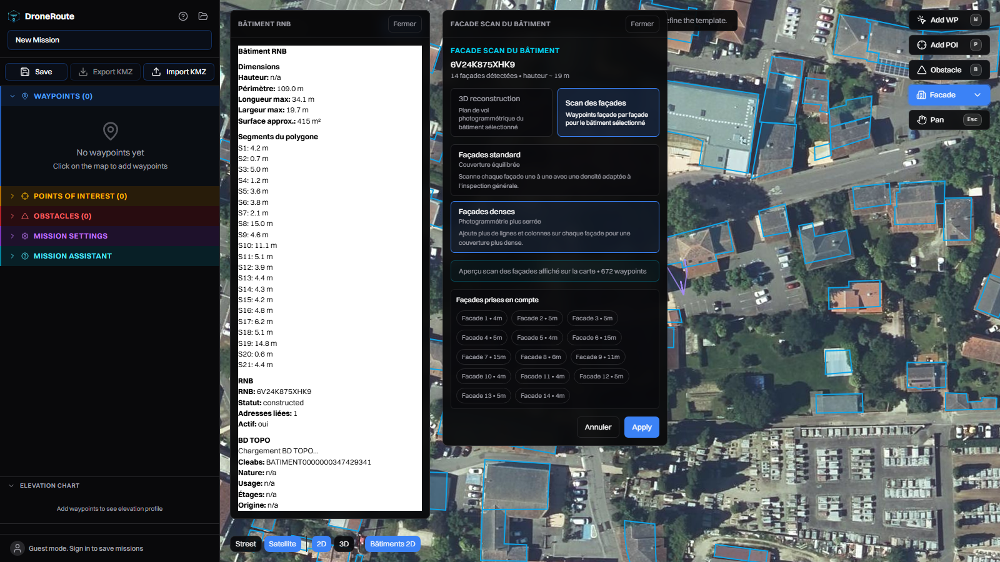
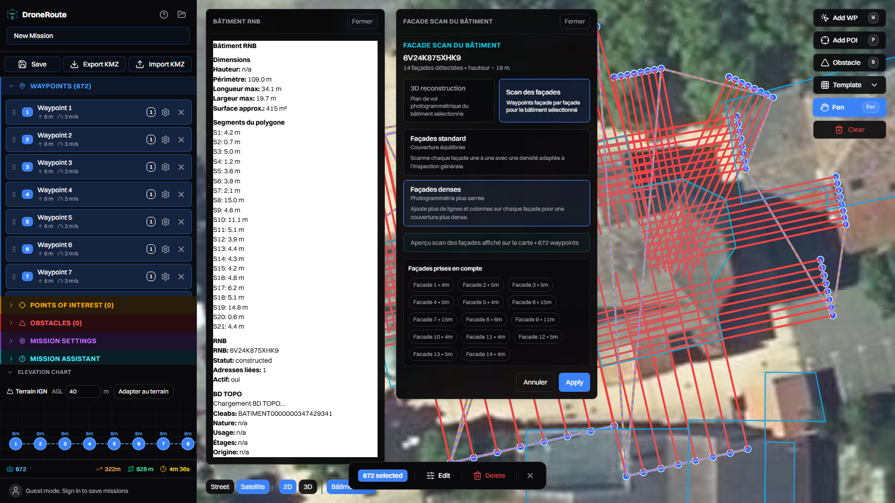
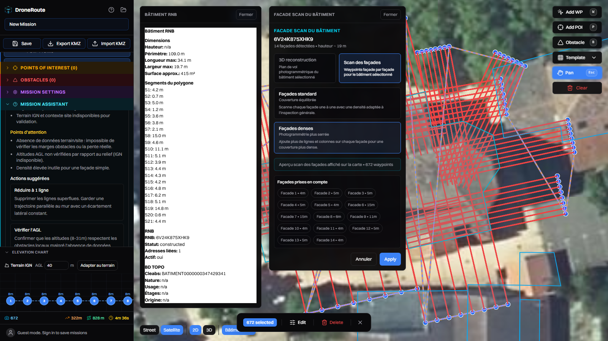
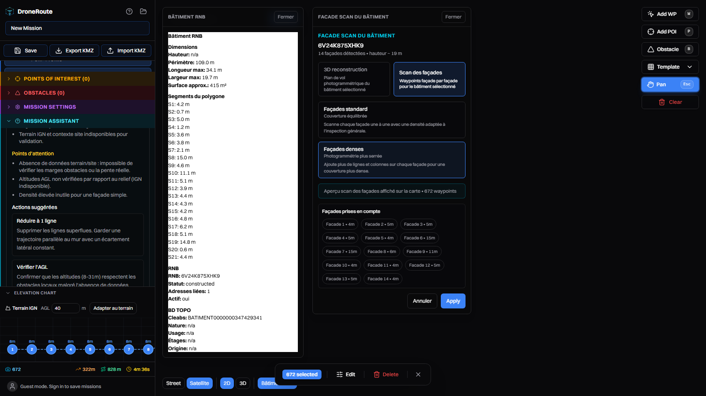

Parcours : couche RNB → clic eglise → Template/Facade → « Bâtiment
sélectionné » → Scan des façades → Façades denses → Apply → IA → 3D →
KMZ.
Video — test complet.Session integrale : selection, scan dense (672 waypoints), analyse
IA, 3D, export.

1. L'eglise en BD ORTHO.Vue exacte z18 sur l'eglise (43.4519454, 1.3992749).

2. Couche « Bâtiments 2D » (RNB).276 emprises chargees apres correction de la pagination (20/page
avant → clics sur voisins). L'eglise est selectionnable.
4. Panneau « Facade scan du bâtiment ».14 façades détectées, hauteur ~19 m (heuristique, BD TOPO encore en
chargement), modes 3D reconstruction /
Scan des façades, apercu 38 waypoints.

5. Variante « Façades denses ».Apercu : 672 waypoints sur les 14 façades. Alternative : « Façades
standard » (plus leger).

6. Mission appliquee (Apply).672 waypoints, 322 m / 828 m / 4 min 36 s, profil d'elevation,
lignes de vol rouges sur l'eglise.

7. Analyse IA locale (Ollama + Qwen).L'IA demande a reduire les waypoints, verifier l'AGL (8 m min) et
l'autonomie — pertinent pour 672 points.

8. Vue 3D — limite headless.Fond noir : le rendu 3D + 672 waypoints + 276 polygones sature
SwiftShader en headless. A retester en navigateur reel (la 3D legere
fonctionne, cf. demo precedente).9. Export KMZ.Bouton Export KMZ → eglise-selection-facade.kmz (34
Ko), importable DJI Pilot 2.